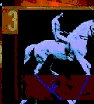

- text -
People talk about going digital and wanting bits instead of atoms. In this series of articles, I am writing about the state of the digital lifestyle. Before talking about text, it is important to define what I mean by digital. A simple definition might say that being digital uses a binary system that involves ones and zeroes. Digital video, for example, has the images written to a binary-based file.
 |
uk Hannah Cox believes that it is through love that we will transcend our perceptions of reality in general but specifically in relation to our understanding of time. spired and mutated according 2 the dynamics of an active network. html An interactive Flash work based on the artist's poetical text of the same name, sound and musical pieces created and performed by the artist himself. The user can create his individual visual and musical environment by himself by using the given image, text, sound and music elements. html Based on the artist's sound, voice and poetic text (of the same name), created in Flash and performed by the artist himself.
|  |
The research so far has shown that it is possible to adapt many of the fundamental concepts developed to date in computational linguistics in such a way that they become useful for text-picture combinations as well. . Whereas humans easily become experts for mapping from images to text (e. , a radio reporter describing a soccer game) or from text to images (e. , a cartoonist transforming a story into a comic strip), such complex transformations are a great challenge for computer systems.
 |
html Council on Library Resources and the Association of American Publishers. Report produced as part of the Open Journals Framework project, funded in the UK by JISC's Electronic Libraries Programme. html TEI Guidelines for Electronic Text Encoding and Interchange (P3). The Text Encoding Initiative (TEI) is an international cooperative project is a systematized attempt to develop a fully general text encoding model and set of encoding conventions based upon it, suitable for processing and analysis of any type of text, in any language, and intended to serve the increasing range of existing (and potential) applications and use. html NewJour - Electronic Journal and Newsletter Archive.
|
A good text site: http://www.perseus.tufts.edu/cgi-bin/text?lookup=ag+gram.+toc
.